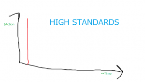
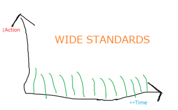

Lo! And Chagami sayeth:
It doesn’t matter how many kanji you do a day/how many sentences you’re learning/how much vocab you’re picking up, all that matters is that progress is being made. I know that sometimes it can feel like we’re lowering our standards by just striving to make progress, but then again, if you are like me, who had month long gaps in the initial stages of RTK study, maybe it isn’t a lower standard after all.
It’s all fun and games until it isn’t. That’s when you burn out.
{kind=link}
Don’t get clever. Don’t make things painful with your “I must do a million kanji a day OR ELSE!”.
Or else what?
Progress is progress. Stop making up fake hard rules. Make easy rules. Make easy games. Winnable games.
Less heroics. More consistency. More sustainability. You need a pace you can actually keep. That means, yes, don’t have high standards. Instead, have wide standards.
“Wide standards? WTF?”
That means standards you can sustain. I don’t care how many kanji you do per day and neither should you. What matters is how many days you keep coming back to the kanji. High standards say: “Do 100 kanji per day”. Wide standards say: “Do kanji, no matter how little, for 100 days straight”.
{kind=link}
Area under the graph is what we want. We don’t need a lone, phallically-shaped, never-repeating spike on the left side: that’s binging and purging. You don’t want the Washington Monument. You want the Lincoln Memorial. Scratch that, you want…a lawn 1. Do you think it’s an accident that grasses are the most successful plants on the face of the earth 2? Grasses have wide standards, bro 3.
High standards lead to pain and suffering. High standards lead to three-day monking. Don’t have high standards, have wide standards. And guess what? Wide standards turned on their side…are actually high standards, just like the tortoise is the true fast runner. You don’t need to rush to be excellent, you just need to move, you just need to continue.
{kind=link}
There’s another meaning for the term “wide standards”. Think of it in terms of a goal on a soccer pitch. If the goal is wide, then it’s easier to score, and from further away. On the soccer pitch of your Japanese life, you want to make the goal so wide that virtually any ball you kick can get in.
That means small stuff counts; precursor actions count. Rap music? Totally counts. Score. Doing 1 rep? Counts. Score. Playing Japanese podcasts while you do your homework? Counts. Score. Simply flipping through a Japanese book? Counts. The goal is wide. Kick and you’ll make it. Kick and you’ll score. Anything Japanese should count. Even stuff I personally think is lame 😀 .
Don’t aim high. Aim wide.
Notes:
- Mmm…this is actually a sucky example because many people — European-Americans — living in lawn-inappropriate climates apparently go to quixotic lengths to create and maintain the “perfect” lawn. But…pretend we’re talking about, like, the Kenyan highlands or some place in Britain, where lawns kinda sorta grow naturally. I’m disclaiming myself way too much aren’t I? This is what happens when you have footnotes. You just go wild. I didn’t even need to type that last sentence: it was totally a waste of your time. OK, I’m done. I promise. Done!
Totally done.
😀 ↩
- Is this actually true? I hope so…Coz I totally forget where I read this. Botanists, please enlighten me 😀 ↩
- Official announcement: chicks are also bros now 😛 ↩
This is something I’ve just started to realize in other situations. I’ve always been so 100% or 0%
and anything in between is bad, its taken me ridiculous amount of time to make small changes to
that thinking. I’m getting so much more done like this.
I wish I could just turn a switch and be AJATT. Instead I try to make all this stuff, put some effort only to conclude, that taking it easy is the only thing that works after all. I do trial and error virtually always ending up with the exactly the same solutions as stated in here.
I know I should work on some vocabulary, check some dicts, but insted I watch HIMYM and I enjoy it and have no regrets whatsoever. The stuff I need will come but fun won’t have itself (@_@)
Very good post, I had this problem before, but luckily i’m out of it.
I’m all about easy goals now. I choose goals based on how I perform recently. Recently, i’ve been pulling ~20 sentences a day, so i set that as my goal because i know i can do it easily. However, If i don’t reach it, i’m fine, i don’t think much of it.
2 days ago i only did 4 sentences, but was totally cool with it, because I know if i usually do 20 a day, 1 small dip won’t hurt me at all.
Again, brilliant. I always had unrealistic standards. I used to do it the typical Asian way, 600 Kanji a day (ok, thats an exaggeration, its more like 4444), but I realized that it was getting me nowhere! I would quit after day 2 only to restart 1 week later and quitting again 2 weeks later. Its like a vicious cycle which eventually gets you nowhere. This article will hopefully cure me of this detrimental habit of “aiming too high”. Maybe I should try “aiming wider”. Thanks
Haha… I have the same problem in almost every sphere of my life… If I can’t be 100% perfect at something, right away, the usually I won’t do it at all. Just starting to really study Japanese was a huge achievement, for me, I guess, but I still have problems with lowering my standards. I still go about stuff the “all or nothing” way and I’m not really sure what to do about it :c
Dunno about grass, but bacteria are undoubtly the most successful form of life under almost all criteria one can think of, and the reason for that is precisely that they have such wide standards.
www.stephenjaygould.org/library/gould_bacteria.html
I agree, this is something I like to call being “consistently persistent”–you have to be like that starving pitbull that just got ahold of a nice, fresh steak: someone could pick you up and swing you around and you wouldn’t let go of it. Making small amounts of progress every day is more important than making a lot every now and then. Don’t ever do more than you can do every single day: what that means is that if you can’t sustain the rate at which you’re going, then slow down.
Cheers,
Andrew
Khatz, just to clarify, this applies to the “study aspect” like doing SRS reps, etc, but given any 86,400 second period one should be striving to be in a Japanized environment for as many of those seconds as humanly possible right? I guess what I’m saying is, it doesn’t matter how many kanji you learn a day, as long as you learn some, or how many sentence reps you do, as long as you do some, . That totally makes sense to me. But is immersion different? I know that there have been times when I was tempted to get slack about immersion, to stay in English even after things I NEEDED to do in English were finished, but because I have deeply drilled into myself this instinct to constantly maximize Japanese exposure I have been able to overcome those temptations to get sucked into the 24 Hour NCIS marathon on USA that was playing in the other room, and etc. If I’d been taking a less hardcore approach, and expected less of myself in this regard, I can easily see days passing with very little time actually spent in Japanese. Basically doing a small “token” amount of immersion and then saying, well, as long as I do some each day that’s good and then tuning into the Family Guy re-runs (When in the hell is this gonna get a Japanese dub btw?). And, I think if my immersion fell apart like that, my SRSing and whatnot would follow quickly behind it. Generally, slippery slope arguments are fallacies, but in this case, the pull of English is so powerful it really does create a “slippery” condition, I believe, and we must be on guard. I feel like I haven’t worded this very clearly, but hopefully what I am trying to ask/address is coming through. Thanks.
Hmm… well, the way I see it is, yes, immersion is different. You should do immersion always, but it doesn’t need to be always ACTIVE immersion. In fact, I think most of it is supposed to be passive. Active immersion would be something like studying kanji or reading a book in your L2 or closely watching a movie or closely listening to a podcast. This sort of action takes energy, so it should be done in short bursts that happen often, not long stretches. Passive immersion would be to have the movie/podcast/whatever going but not really paying attention to it. This requires no or almost no energy and should be happening as often as possible. So you could be doing passive immersion while you’re doing something else… napping, cleaning, exercising, homework, whatever.
So… yes, keep the immersion going, but make the active part of it small, easy things that you do often.
yup thats how i see it also. just couldnt quite articulate it.
Gosto um bocado daqui, obrigada.